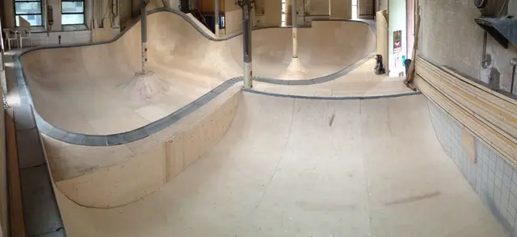
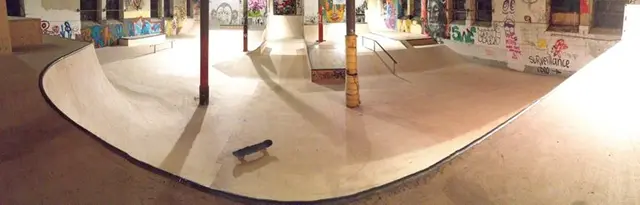
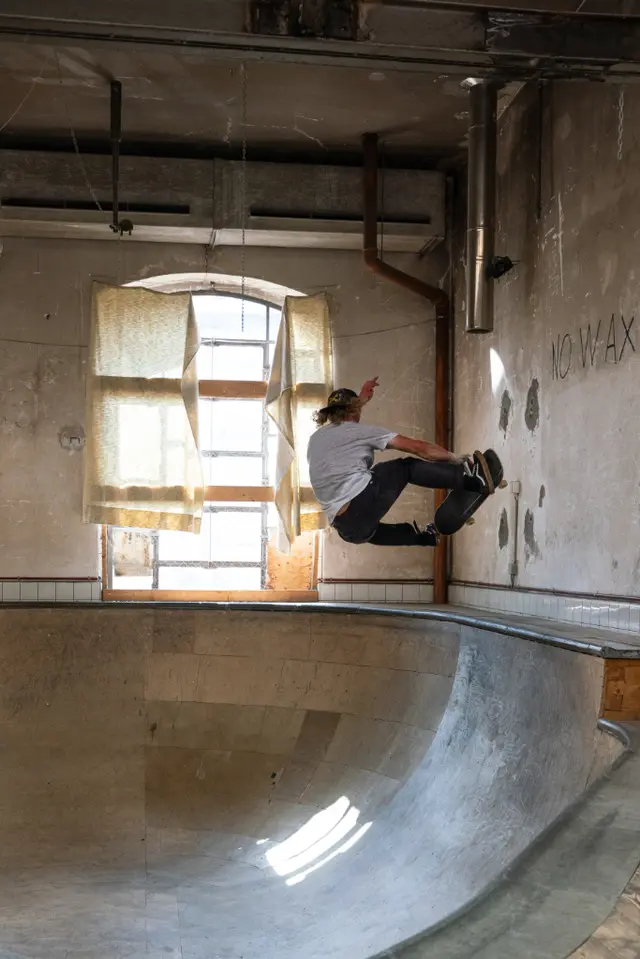
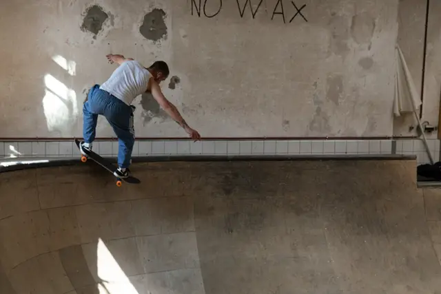

Historique · Hommage
Le bowl
Le bowl de La Chaux-de-Fonds est définitivement fermé.
Une sorte de bassin aux parois recourbées, dont le design, la conception technique et la construction ont été assumés par les membres de l'association.

La courbe
Une forme dessinée pour ce local
- Un local annexe, réservé au bowl
- 180 m²
- de travail, réparties sur une année
- près de 1500 heures
- obtenus et investis dans les installations du park et du bowl
- près de 100’000 francs
- si les mêmes infrastructures avaient été confiées à des entreprises privées
- environ 250’000 francs
Un projet d’envergure
Depuis 2013, un bowl a été érigé dans un local annexe de 180 m². Comme pour le skatepark, son design, sa conception technique et sa construction ont été assumés par les membres de l'association Park N' Sun. Le design avait été réfléchi spécifiquement pour ce local.
Ces infrastructures ont été réalisées bénévolement, mais avec une qualité professionnelle, grâce au concours de menuisiers et de serruriers membres et amis de l'association.
Elles ont été financées avec le soutien de la Ville de La Chaux-de-Fonds, à travers le Parlement des Jeunes et le Service des Sports, de la Loterie romande, de la fondation Helvetia pour la Jeunesse et de plusieurs autres contributeurs privés.
Du chantier à la fermeture
-
Depuis 2013
Début de la construction
[À FOURNIR : date de début du chantier]

Début de la construction du bowl. -
Sur une année
Près de 1500 heures de travail
Le bowl a nécessité près de 1500 heures de travail, réparties sur une année.

Construction du bowl dans son ensemble. -
Le bowl est terminé
Deux profondeurs, des margelles, des poteaux contournés

La construction du bowl est terminée. -
2019
Le skatepark en 2019

Le skatepark de La Chaux-de-Fonds en 2019. -
2021
StreetDay : contest et jam session au bowl
Pour l'édition spéciale des 10 ans du StreetDay, l'association a organisé un contest de skateboard avec cashprize au bowl.




Jam session de skateboard au bowl, StreetDay 2021. Photos : @SteveVisinand. -
Rénovation
Le bowl doit quitter son local
Le projet de rénovation prévoyait que le bowl soit enlevé du local qu'il occupait, pour laisser la place à une autre affectation gérée par la Ville. L'association voulait en intégrer des parties au skatepark.
[À FOURNIR : parties du bowl réellement réutilisées]
-
Définitivement fermé
Le bowl est démonté
[À FOURNIR : date exacte du démontage]
Archives
[À FOURNIR : photos d'archive du bowl et dates] [À FOURNIR : témoignages]